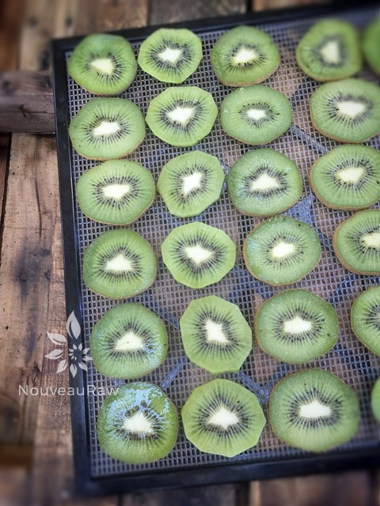
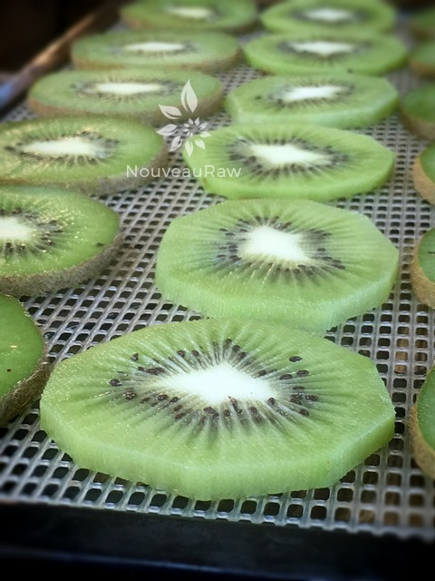

Dehydrated Kiwi

~ raw, dehydrated ~
I want to start off by clearing up the fact that I am referring to drying kiwi FRUIT, not the kiwi BIRD! I had no idea there was such a thing since they don’t live or migrate to my neck of the woods, but just in case they are a typical bird where you live… I didn’t want you to think that I dehydrate birds. :)
Kiwi contains a rich supply of minerals and vitamins important for our health. Kiwi is in the ‘most alkaline’ category of fruits, helping you obtain alkaline balance and counteracting the excess of harmful acidic foods in your diet. Kiwi is also a great source of vitamin C, a nutrient proven to boost the immune system. And we can always use a little extra of that!
Let’s take a moment and talk about the fury exterior of this fruit. Can you eat it? The answer is absolutely! The kiwi fruit skin is completely edible and makes this nutrient-dense fruit even more nutritious! Studies have shown that eating the skin triples the fiber intake compared to merely eating the flesh. And by not peeling the skin, you preserve much of the vitamin C content as well.
I for one, haven’t ever eaten the skin… I guess it just never seemed appealing but next time, I am going to give it a try. My only word of caution is to only eat the skin if you know that it hasn’t been sprayed with pesticides and/or other chemicals.
How to select the perfect kiwi… Just as we are told, not to judge a book by its cover … Don’t judge a kiwi by its skin. They may all look the same on the outside, but when it comes to eating satisfaction, it’s the inside that counts. Look for firm, unblemished fruit, and don’t worry about the size — smaller kiwi taste just the same as larger ones. When it comes to flavor, size doesn’t matter! Gently press the outside of the kiwi with your thumb. If it gives to slight pressure, the kiwi is ripe. If it doesn’t give to pressure, it’s not ready to eat. The main thing that we always want to remember when dehydrating fruit is to use good quality, ripe fruit. I think many people have a misconceived idea that if we dehydrate unripe or overly ripe fruit, it is a good way to use it up. If you start the process with bad fruit, you will just end up with badly dehydrated fruit.
- 4 lbs ripe kiwi = 3 trays
Preparation:
- Wash the kiwi.
- Cut each off, creating a flat surface.
- With the kiwi on end, run a pairing knife right under the skin from top to bottom. Make sure you have a sharp knife. You shouldn’t have to saw through the cut, just a nice slip of the knife down the fruit.
- Cut into slices 1/4-1/2 inch thick. The thinner the slices, the quicker the kiwifruit will dehydrate.
- Try to make the cuts even so they all dry at the same rate. I tried to use a mandolin but due to the texture to the inner fruit, the seeds caused the slices to jam up and tear. Use a knife. :)
- If you have some thick pieces you can dice into chunks for dehydrating and use for decorations or in granola recipes.
- Drying time depends on several factors:
- Thick or thin slices – the thinner the slice, the quicker the dry time will be.
- Temperature – the lower the temperature, the longer the drying time. I recommend dehydrating them at 115 degrees (F) to preserve the enzymes and nutrients. This can take 8-14 hours.
- Humidity – the higher the humidity in the room air, the longer the dry time will be.
- Water content – the higher the water content in the kiwi, the longer it will take to dry.
Culinary Explanations:
- Why do I start the dehydrator at 145 degrees (F)? Click (here) to learn the reason behind this.
- When working with fresh ingredients it is important to taste test as you build a recipe. Learn why (here).
- Don’t own a dehydrator? Learn how to use your oven (here). I do however truly believe that it is a worthwhile investment. Click (here) to learn what I use.


© AmieSue.com